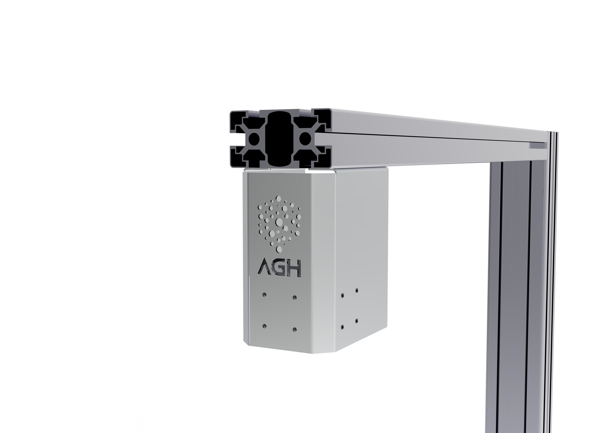

Voxel Cam
Solución de dimensionado por cámara para captura de dimensiones y peso en tiempo real. Interfaz clara en pantalla, datos listos para exportar a tu WMS o carrier y máxima precisión en cada medición.

Almacena, exporta e integra tus datos dimensionales para aumentar la rentabilidad y la eficiencia en tu cadena de suministro.
Solución de dimensionado por cámara para captura de dimensiones y peso en tiempo real. Interfaz clara en pantalla, datos listos para exportar a tu WMS o carrier y máxima precisión en cada medición.
Software de medición dimensional 3D para integración con equipos de visión. Procesamiento de datos, visualización y salida a tus sistemas de gestión logística.
Versión ligera de Voxel Cam: dimensionado y pesaje con interfaz sencilla, ideal para estaciones con menos requisitos o para dar el primer paso en medición inteligente.
Plataforma en la nube para centralizar datos dimensionales de varias estaciones, reportes y análisis. Acceso desde cualquier lugar y sincronización con tu operativa.

Object Dimensional Camera
Sistema de dimensionado por visión: captura dimensiones y peso de objetos individuales o bultos con precisión. Ideal para líneas de picking, estaciones de empaque y control dimensional en tiempo real sin contacto.




Pallet Dimensional Camera
Sistema de medición dimensional pensado para pallets completos, jaulas y cargas voluminosas. Captura volumen y peso de cada unidad logística en segundos, reduciendo errores de facturación y mejorando la ocupación en transporte y almacén.